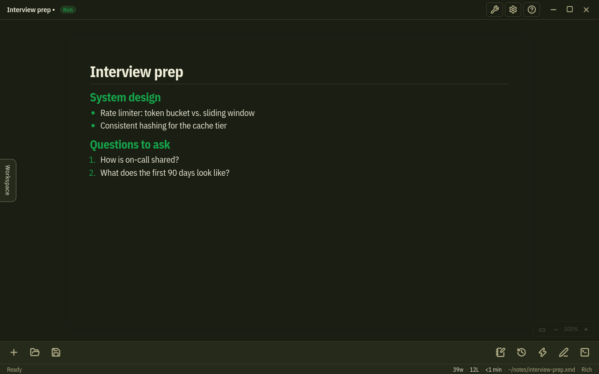
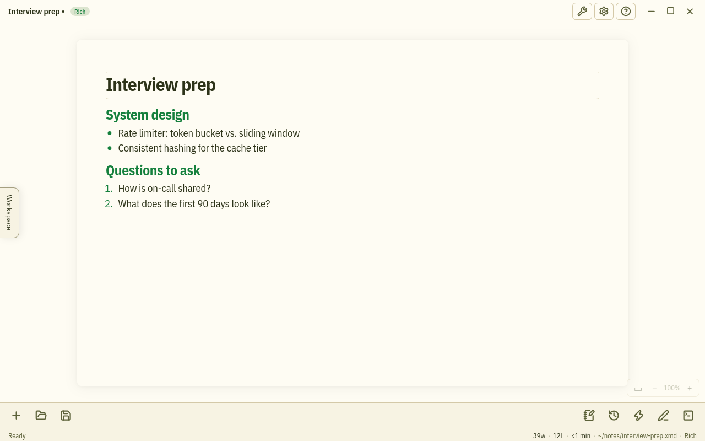

Write with a slash
Type / anywhere, filter by name and press Enter — no mouse needed.
- Headings, lists, task lists and quotes
- Code blocks with syntax highlighting
- Tables, callouts, kanban boards and carousels
- Images and attachments stored inside the note